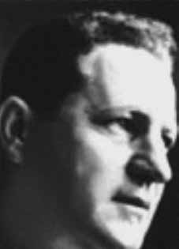

Luiz
Ghilardini
CIRCUNSTÂNCIAS DA MORTE
Em carta enviada ao Grupo Tortura Nunca Mais, em 1993, a esposa de Luiz Ghilardini, Orandina Ghilardini, narrou, que em 4 de janeiro de 1973, sua casa foi invadida por treze homens armados que encapuzaram e prenderam ela, Luiz, e seu filho de oito anos, Gino. Depois de serem espancados, os três foram levados em dois carros para um local, que ela presumia ser o DOI-CODI-RJ, onde as sevícias continuaram. Na última vez que Orandina viu seu marido, ele estava de costas, as mãos amarradas com uma borracha, com os braços roxos. Ela e seu filho foram conduzidos encapuzados, no mesmo dia, a um quartel, que ela acredita estar localizado no bairro de São Cristovão, no Rio de Janeiro. Depois de três dias mantidos em uma cela exposta ao sol, Orandina foi separada do filho, que foi conduzido ao Serviço de Assistência ao Menor. Dias depois, ela foi informada da morte de seu marido e, três meses mais tarde, libertada, quando pôde reunir-se com seu filho. Apesar de a família ter testemunhado a prisão de Luiz, os órgãos de segurança divulgaram outra versão. Documentos oficiais informam que Luiz foi morto no contexto de desarticulação do PCdoB empreendida pelo I Exército, no Rio de Janeiro e em São Paulo. Segundo essa versão, os militares invadiram o comitê central do partido em Turiaçu (RJ) e prenderam ali o militante. Luiz teria pedido “que o carro parasse para ele descer” e em seguida agrediu o motorista e saltou do carro, que “se descontrolou e foi chocar-se com a calçada”. Para impedir a fuga, os militares teriam atirado em Luiz, que morreu na rua. A guia nº 14 do DOPS, sob o registro nº 23/73, indica o envio ao Instituto Médico Legal do Rio de Janeiro (IML-RJ) de um “homem desconhecido de cor branca aparentando 60 anos”. O corpo deu entrada no IML em 5 de janeiro de 1973, e o laudo indica que o corpo fora perfurado por seis projéteis de arma de fogo que atingiram a pálpebra, o globo ocular, pescoço, abdômen, coração e tórax.i Nos autos do caso, constam fotos de perícia de local do Instituto Carlos Éboli do Rio de Janeiro, nº 0078/73. O laudo de perícia do local (Ocorrência n.º 14/73) registrou não haver arma de fogo no local e que “[…] nos pulsos da vítima havia sinais recentes de ferimentos produzidos por algo que os prenderam. Os ferimentos, embora superficiais, faziam-se notar nitidamente”ii . As fotografias encontradas mostram o rosto de Luiz desfigurado. Foram emitidas duas certidões de óbito para o militante, com diferentes datas de morte: a primeira, de nº 17-117, de 6 de fevereiro de 1973, declara que ele morreu em 1 de janeiro daquele mesmo ano; a segunda, nº 17-119, de 23 de março de 1973, registra a morte em 4 de janeiro de 1973. As certidões estão assinadas pelo médico Rubens Macuco Janini e indicam como causa da morte “ferimento transfixiante do coração”iii . Mais tarde, em carta, seu filho Gino descreveu as circunstâncias da morte do pai. Relatou que sua mãe, ao deixar a prisão, procurou pelo marido no Instituto Médico Legal (IML), a partir de informação do Exército. Um funcionário do IML informou a Orandina que o corpo de Luiz havia chegado ao local em 4 de janeiro de 1973 e que permaneceu ali até o dia 5 de fevereiro, sendo depois enterrado como indigente no cemitério Ricardo de Albuquerque, no Rio de Janeiro. O funcionário alegou que nenhum parente compareceu para retirar o corpo, apesar de ter sido identificado em 5 de janeiro. Embora já tivesse sido devidamente identificado, o corpo de Luiz Ghilardini foi enterrado como indigente, no cemitério Ricardo de Albuquerque, no Rio de Janeiro (RJ), tendo sido transferido para um ossário-geral em 20 de março de 1978, e, entre 1980 e 1981, trasladado a uma vala clandestina com cerca de duas mil outras ossadas.
In a letter sent to the Grupo Tortura Nunca Mais, in 1993, Luiz Ghilardini's wife, Orandina Ghilardini, narrated that on January 4, 1973, her house was invaded by thirteen armed men who hooded and arrested her, Luiz, and her eight-year-old son, Gino. After being beaten, the three were taken in two cars to a location, which she assumed was DOI-CODI-RJ, where the abuse continued. The last time Orandina saw her husband, he was on his back, his hands tied with rubber, his arms were purple. She and her son were taken hooded, on the same day, to a barracks, which she believes to be located in the São Cristovão neighborhood, in Rio de Janeiro. After three days kept in a cell exposed to the sun, Orandina was separated from her son, who was taken to the Child Assistance Service. Days later, she was informed of her husband's death and, three months later, released, when she was able to reunite with her son. Although the family witnessed Luiz's arrest, security agencies released another version. Official documents state that Luiz was killed in the context of the disarticulation of the PCdoB undertaken by the 1st Army, in Rio de Janeiro and São Paulo. According to this version, the military invaded the party's central committee in Turiaçu (RJ) and arrested the militant there. Luiz allegedly asked “for the car to stop so he could get out” and then attacked the driver and jumped out of the car, which “lost control and crashed into the sidewalk”. To prevent the escape, the military allegedly shot Luiz, who died in the street. DOPS guide no. 14, under registration no. 23/73, indicates the sending to the Legal Medical Institute of Rio de Janeiro (IML-RJ) of an “unknown white man appearing to be 60 years old”. The body was admitted to the IML on January 5, 1973, and the report indicates that the body had been pierced by six firearm projectiles that hit the eyelid, eyeball, neck, abdomen, heart and chest. The local expert report (Occurrence No. 14/73) recorded that there was no firearm at the scene and that “[…] on the victim's wrists there were recent signs of injuries caused by something that trapped them. The injuries, although superficial, were clearly noticeable”ii. The photographs found show Luiz's face disfigured. Two death certificates were issued for the activist, with different dates of death: the first, number 17-117, dated February 6, 1973, states that he died on January 1 of that same year; the second, nº 17-119, dated March 23, 1973, records the death on January 4, 1973. The certificates are signed by the doctor Rubens Macuco Janini and indicate the cause of death as “transfixing injury to the heart”iii. Later, in a letter, his son Gino described the circumstances of his father's death. She reported that her mother, upon leaving prison, looked for her husband at the Legal Medical Institute (IML), based on information from the Army. An IML employee informed Orandina that Luiz's body had arrived there on January 4, 1973 and remained there until February 5, before being buried as a pauper in the Ricardo de Albuquerque cemetery, in Rio de Janeiro. The employee claimed that no relative came to collect the body, despite it being identified on January 5th. Although it had already been properly identified, Luiz Ghilardini's body was buried as a pauper, in the Ricardo de Albuquerque cemetery, in Rio de Janeiro (RJ), having been transferred to a general ossuary on March 20, 1978, and, between 1980 and 1981, transferred to a clandestine grave with around two thousand other bones.
En carta enviada al Grupo Tortura Nunca Mais, en 1993, la esposa de Luiz Ghilardini, Orandina Ghilardini, narró que el 4 de enero de 1973 su casa fue invadida por trece hombres armados que encapucharon y arrestaron a ella, a Luiz, y a su hijo de ocho años, Gino. Después de ser golpeados, los tres fueron trasladados en dos automóviles a un lugar, que ella supuso era el DOI-CODI-RJ, donde continuaron los abusos. La última vez que Orandina vio a su marido, éste estaba boca arriba, con las manos atadas con goma, los brazos morados. Ella y su hijo fueron llevados encapuchados, el mismo día, a un cuartel, que cree que está ubicado en el barrio de São Cristovão, en Río de Janeiro. Luego de tres días retenida en una celda expuesta al sol, Orandina fue separada de su hijo, quien fue trasladado al Servicio de Atención a la Infancia. Días después, fue informada de la muerte de su marido y, tres meses después, fue puesta en libertad, cuando pudo reunirse con su hijo. Aunque la familia presenció la detención de Luiz, organismos de seguridad difundieron otra versión. Documentos oficiales afirman que Luiz fue asesinado en el contexto de la desarticulación del PCdoB emprendida por el 1º Ejército, en Río de Janeiro y São Paulo. Según esta versión, los militares invadieron el comité central del partido en Turiaçu (RJ) y arrestaron allí al militante. Luiz supuestamente pidió “que el auto se detuviera para poder salir” y luego atacó al conductor y saltó del auto, que “perdió el control y se estrelló contra la acera”. Para impedir la fuga, los militares supuestamente dispararon a Luiz, quien murió en la calle. Guía DOPS no. 14, bajo el registro núm. 23/73, indica el envío al Instituto Médico Legal de Río de Janeiro (IML-RJ) de un “hombre blanco desconocido que aparenta tener 60 años”. El cuerpo fue ingresado al IML el 5 de enero de 1973 y el informe indica que el cuerpo había sido atravesado por seis proyectiles de arma de fuego que impactaron en párpado, globo ocular, cuello, abdomen, corazón y tórax. El peritaje local (Ocurrencia N° 14/73) registró que en el lugar no se encontraba ningún arma de fuego y que “[…] en las muñecas de la víctima presentaban señales de heridas recientes provocadas por algo que las atrapó, las heridas, aunque superficiales, eran claramente notorias”ii. Las fotografías encontradas muestran el rostro de Luiz desfigurado. Al activista se le expidieron dos actas de defunción, con diferentes fechas de fallecimiento: la primera, número 17-117, del 6 de febrero de 1973, señala que falleció el 1 de enero de ese mismo año; el segundo, nº 17-119, de 23 de marzo de 1973, registra el fallecimiento el 4 de enero de 1973. Las actas están firmadas por el médico Rubens Macuco Janini e indican la causa de la muerte como “lesión traspasante al corazón”iii. Posteriormente, en una carta, su hijo Gino describió las circunstancias de la muerte de su padre. Denunció que su madre, al salir de prisión, buscó a su esposo en el Instituto Médico Legal (IML), con base en información del Ejército. Un empleado del IML informó a Orandina que el cuerpo de Luiz llegó allí el 4 de enero de 1973 y permaneció allí hasta el 5 de febrero, antes de ser enterrado como indigente en el cementerio Ricardo de Albuquerque, en Río de Janeiro. El empleado afirmó que ningún familiar acudió a recoger el cuerpo, a pesar de que fue identificado el 5 de enero. Aunque ya había sido debidamente identificado, el cuerpo de Luiz Ghilardini fue enterrado como indigente, en el cementerio Ricardo de Albuquerque, en Río de Janeiro (RJ), habiendo sido trasladado a un osario general el 20 de marzo de 1978 y, entre 1980 y 1981, trasladado a una fosa clandestina con alrededor de dos mil huesos más.